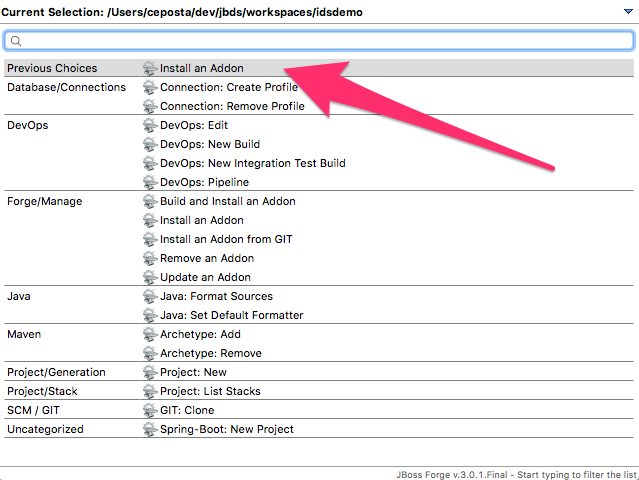
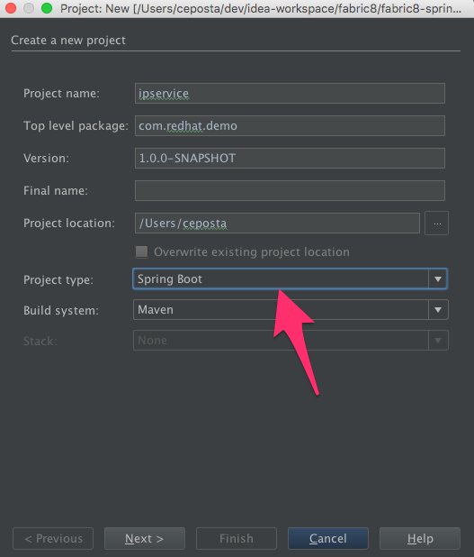
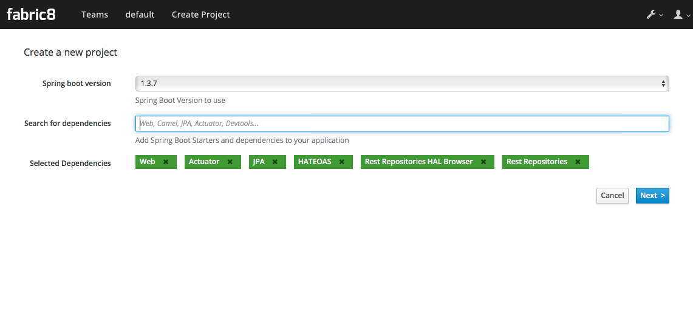
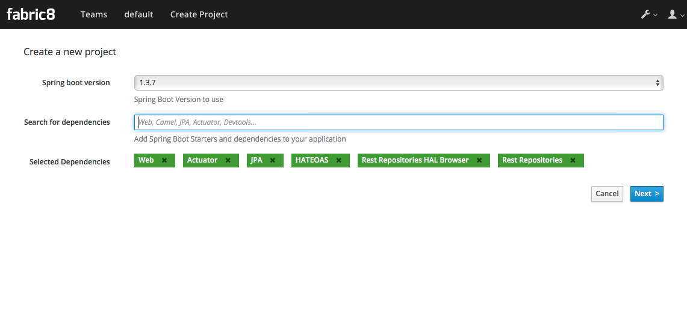
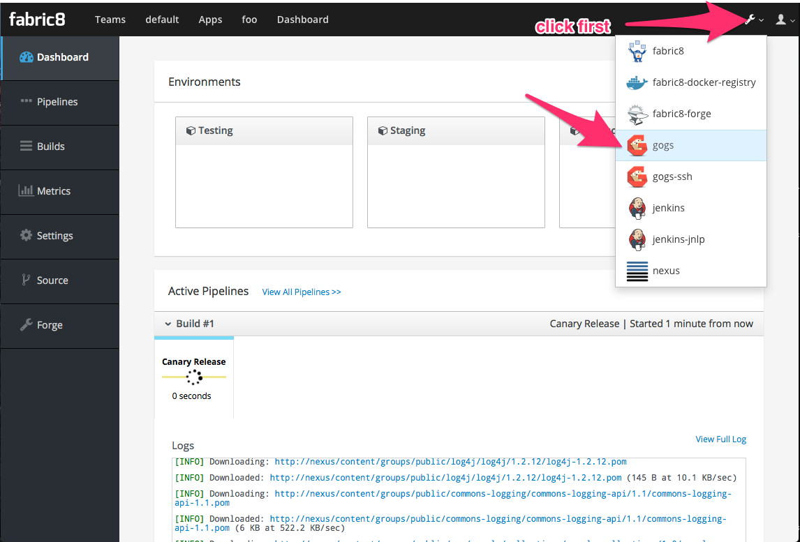
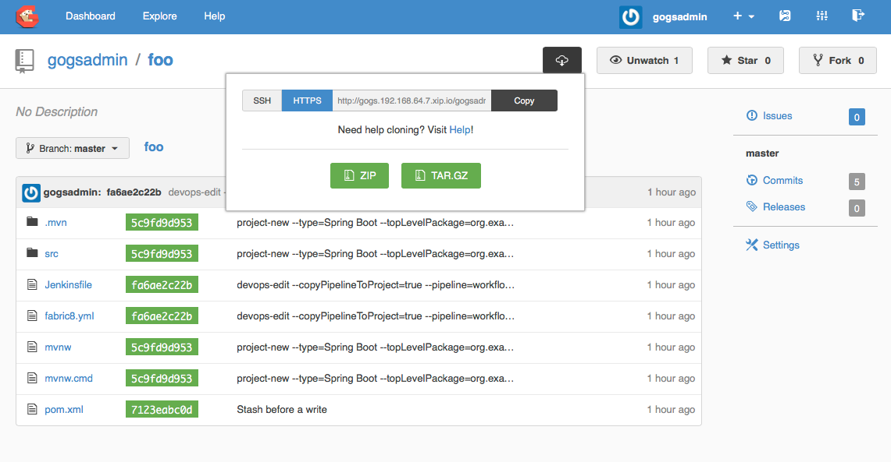

© 2016 The original authors.
1. Introduction
This document will help you get started building applications with Spring Boot that run on Kubernetes and various distributions of Kubernetes (ie, OpenShift v3.x).
1.1. Make JAR not WAR. We need Moar!
Spring Boot is a great way to build simple Java microservices and has a vibrant ecosystem to help facilitate. Spring Boot and its surrounding ecosystem go to great lengths to help developers get started with microservices including taking some of the pain out of configuration, health checking, boostrapping etc. For example, Spring Boot prefers an "uber-jar" model of packaging a microservice which is executable on its own. This helps reduce the many mistakes that can happen when trying to juggle application servers + WARs/EARs as well as simplifies the classloading model for those apps that can get away with it. When we’re deploying lots of microservices, we want to eliminate configuration drift as much as possible and reason about our apps without adding complications between environments.
Building to uber jars does help with this but is not the end of the story. As we further our quest to reduce configuration drift between environments for our apps we must also be aware of this fact: A Java based microservice depends fully on a JVM. The JVM is a very important implementation detail of our Java application. As are the dependencies and transitive dependencies of the JVM (libc, etc). A developer that created an app using a particular JVM on, let’s say, Windows could potentially behave quite differently on a different JVM running on Linux (in a QA environment, let’s say). You’ll want a way to capture the complete snapshot of binaries that make up you application and Linux Containers and associated image formats is a great way to do that.
1.2. Isn’t Docker and Kubernetes complicated?
There’s an interesting dynamic between "yah we need this" and "well, it’s too complicated". We can hope and pray and ignore it? But really, what if we just made it easier to build your Docker images and deploy to Kubernetes? That’s what the fabric8 tooling does for you. It allows you to just use the same developer tools you use today and take advantage of building and deploying cloud-native applications on Kubernetes.
1.3. How easy is it?
Lots of Java developers are used to using application servers, creating deployment units (jars/wars), deploying them and running them in app servers using Maven. Then they can use Maven from the command line or easily inside their IDE to do most of the work.
So we figured, why not make Kubernetes look and feel like an application server to a Java developer? So you build and deploy your application from maven like you would with other maven plugins like spring-boot, tomcat, jetty, wildfly, karaf et al. Then you can get started quickly by just treating Kubernetes as a kind of application server.
Kubernetes is actually way more awesome than an application server; its more like an application cloud as:
-
kubernetes can keep running multiple instances of each of your apps including automatic restarts on software or hardware failures
-
automatic load balancing when invoking your apps
-
each app instance is isolated as a separate process so its much easier to monitor metrics and logs
Keep reading to get started with Spring Boot, or checkout how we’ve made it easy for tomcat, jetty, wildfly, karaf, standalone, etc too!
1.4. Do I need to do anything different for my Spring Boot app?
No! Just create your Spring Boot app (or use an existing one if you’ve got one) and add a single maven plugin. That’s it! Here’s how we get started.
2. Create your Spring Boot application
Go to http://start.spring.io and create your app. That’s it. You have other options too:
-
With Spring Tool Suite (STS)
-
with Spring Initializr CLI
-
With JBoss Developer Studio (see below)
-
With IntelliJ, Eclipse, Netbeans (via JBoss Forge – see below)
-
With the Fabric8 console for CI/CD
We can also do with these, but will be covered in a different section:
-
With JBoss Forge CLI
-
With maven archetypes/fabric8 quickstarts
2.1. Spring Initializr or existing Spring projects
STS, start.spring.io, and the spring-boot CLI all use Spring Initializr under the covers.
To kubernetes enable your Spring project, you will need to enable the fabric8 maven plugin.
The simplest way to do this is by using the fabric8:setup goal from the maven plugin; this will add the necessary maven plugin configuration to your pom.xml file.
mvn io.fabric8:fabric8-maven-plugin:3.1.32:setupOr you can manually add the following section to your pom.xml by hand:
<build>
...
<plugins>
<plugin>
<groupId>io.fabric8</groupId>
<artifactId>fabric8-maven-plugin</artifactId>
<version>3.1.32</version>
<executions>
<execution>
<goals>
<goal>resource</goal>
<goal>helm</goal>
<goal>build</goal>
</goals>
</execution>
</executions>
</plugin>
...2.2. JBoss Developer Studio
JBoss Developer Studio has JBoss Forge tooling installed by default. Press CTRL+4 or CMD+4 if on Mac to get the forge window. If you haven’t already, install the Fabric8 devops plugin which will enable the Spring Boot project wizards. You can install the addon from within JBDS by hitting CTRL/CMD+4 and type addon and find the option for installing. Use the coordinate below:

addon-install --coordinate io.fabric8.forge:devops,2.3.18The forge tooling is great because it allows you to declaratively add components/code to your project (kind of like atomist) and we recommend it. However, you could just use the fabric8:setup goal as we did above from within your IDE as well.
Now when you CTRL/CMD+4 you can type project and select the Project New option. When you begin creating the new project, fill in the Project Name, Package Name, etc. and make sure to change the Project Type to 'spring boot':

When you click "Next", you can choose the dependencies you like for your project (just as you can from any Spring Initializr dialog including start.spring.io).

Clicking "Finish" will create the project for you. At this point you have a skeleton Spring Boot project into which you can add your own amazing business logic.
What about when you’re ready to start using the Fabric8 tooling and build Docker images for your Kubernetes installation?
Select the project in your project/package explorer and then hit CTLR/CMD+4 and type fabric8 into the dialog box filter. You should see an option for Fabric8 Setup.

When the next dialog box comes up you can add metadata about which Docker image to use or which Main class to bootstrap, but in our case the fabric8 tooling is going to pick sensible defaults since it will auto-detect we have a Spring Boot application. Just click "Finish"
Now if we take a look at the pom.xml, we’ll see that our fabric8-maven-plugin has been added:

You’re now in business! Skip to the section titled "Spring Boot on Kubernetes" if you’re not interested in set up for IntelliJ. Or, watch a video of doing this whole process here:
<iframe src="https://player.vimeo.com/video/180053437" width="640" height="360" frameborder="0" webkitallowfullscreen mozallowfullscreen allowfullscreen></iframe> <p><a href="https://vimeo.com/180053437">Spring Boot, Spring Cloud with Kubernetes and Fabric8</a> from <a href="https://vimeo.com/ceposta">Christian Posta</a> on <a href="https://vimeo.com">Vimeo</a>.</p>
2.3. IntelliJ
JBoss Forge doesn’t come out of the box with IntelliJ but through IntelliJ’s amazing plugin system, we can easily added it! Just note, you should be running IntelliJ with JDK 1.8+. Newer versions of IntelliJ bundle and use JDK 1.8 out of the box. If you’ve an older version of IntelliJ, hit CMD/CTRL+SHIFT+A to get the All Actions dialog box and start typing SDK. Follow the instructions to change the SDK.

Now you can go to the plugins dialog box and find JBoss Forge:

Now you can CTRL+ALT+4 or CMD+OPTION+4 on Mac to get the Forge dialog box:

Just like with the JBDS example, we’ll find the "Project New" option, fill in the project information, and make sure to select Project Type of Spring Boot:
.
Click next, select the Spring Boot dependencies you’d like to include in your project and click Finish.
To add the Fabric8 tooling, select the root of your project and go back to the Forge dialog (CMD/CTRL+ALT/OPTION+4) and begin typing fabric8

Again, you can add more details to the setup, but just clicking "Finish" is sufficient because fabric8 can auto-detect we’re in a Spring Boot project and use appropriate defaults. Now if you open the pom.xml you’ll see the fabric8-maven-plugin added:

2.4. Spring Boot on Kubernetes
Once we have our Spring Boot microservice to our liking we want to be able to package it up and deliver it to our cluster running in the Cloud. Docker provides a great abstraction (the container!) for doing this. To be able to do this while running on Mac OS X or Windows, we’ll need a little help. We’ll need a Docker daemon and Kubernetes to do this. Here are a few options for getting started:
See the fabric8 docs (http://fabric8.io/guide/index.html) for more details.
Once we have a Docker/Kubernetes environment up and have access to a Docker daemon we can build our docker images. For OpenShift users that wish to use Source to Image, see the next section. First let’s verify we have docker connected properly:
$ docker imagesIf that command returns a list of docker images, you’re ready to go.
Also make sure you’re logged into Kubernetes properly:
$ kubectl get nodesIf that command returns a list of nodes (just 1 if running locally) then you’re good!
Navigate to your spring boot application that we created earlier (and also to which we added the fabric8-maven-plugin). Try running:
$ mvn clean installIf you run a docker images now you should see our new Docker image built and ready to go!!
$ docker images
REPOSITORY TAG IMAGE ID CREATED SIZE
demo/ipservice latest b491738bf223 35 seconds ago 161.5 MB
example/foo 1.0.1 f86db95465cf About an hour ago 161.5 MB
172.30.128.90:80/example/foo 1.0.1 f86db95465cf About an hour ago 161.5 MB
foo/foo latest aa5fa39e3609 21 hours ago 161.5 MBThat’s pretty amazing. Didn’t have to touch a Dockerfile or anything.
What about deploying to Kubernetes? To do that, we usually have to build a Kuberentes resource yml file. Take a look at the ./target/classes/META-INF/fabric8 folder:
$ ls -l ./target/classes/META-INF/fabric8/
total 32
drwxr-xr-x 4 ceposta staff 136 Sep 2 14:07 kubernetes
-rw-r--r-- 1 ceposta staff 3226 Sep 2 14:07 kubernetes.json
-rw-r--r-- 1 ceposta staff 2344 Sep 2 14:07 kubernetes.yml
drwxr-xr-x 4 ceposta staff 136 Sep 2 14:07 openshift
-rw-r--r-- 1 ceposta staff 3343 Sep 2 14:07 openshift.json
-rw-r--r-- 1 ceposta staff 2415 Sep 2 14:07 openshift.ymlWoah! The maven plugin generated manifest json/yml files for us! Let’s take a quick look:
$ cat ./target/classes/META-INF/fabric8/kubernetes.yml
---
apiVersion: "v1"
kind: "List"
items:
- apiVersion: "v1"
kind: "Service"
metadata:
annotations:
prometheus.io/port: "9779"
prometheus.io/scrape: "true"
fabric8.io/iconUrl: "img/icons/spring-boot.svg"
labels:
provider: "fabric8"
project: "ipservice"
version: "1.0.0-SNAPSHOT"
group: "com.redhat.demo"
name: "ipservice"
spec:
ports:
- port: 8080
protocol: "TCP"
targetPort: 8080
selector:
project: "ipservice"
provider: "fabric8"
group: "com.redhat.demo"
type: "LoadBalancer"
- apiVersion: "extensions/v1beta1"
kind: "Deployment"
metadata:
annotations:
fabric8.io/iconUrl: "img/icons/spring-boot.svg"
fabric8.io/metrics-path: "dashboard/file/kubernetes-pods.json/?var-project=ipservice&var-version=1.0.0-SNAPSHOT"
labels:
provider: "fabric8"
project: "ipservice"
version: "1.0.0-SNAPSHOT"
group: "com.redhat.demo"
name: "ipservice"
spec:
replicas: 1
selector:
matchLabels:
project: "ipservice"
provider: "fabric8"
group: "com.redhat.demo"
template:
metadata:
annotations:
fabric8.io/iconUrl: "img/icons/spring-boot.svg"
fabric8.io/metrics-path: "dashboard/file/kubernetes-pods.json/?var-project=ipservice&var-version=1.0.0-SNAPSHOT"
labels:
provider: "fabric8"
project: "ipservice"
version: "1.0.0-SNAPSHOT"
group: "com.redhat.demo"
spec:
containers:
- env:
- name: "KUBERNETES_NAMESPACE"
valueFrom:
fieldRef:
fieldPath: "metadata.namespace"
image: "demo/ipservice:latest"
imagePullPolicy: "IfNotPresent"
livenessProbe:
httpGet:
path: "/health"
port: 8080
initialDelaySeconds: 180
name: "spring-boot"
ports:
- containerPort: 8080
protocol: "TCP"
- containerPort: 9779
protocol: "TCP"
- containerPort: 8778
protocol: "TCP"
readinessProbe:
httpGet:
path: "/health"
port: 8080
initialDelaySeconds: 10
securityContext:
privileged: falseWow! It built out a Kubernetes Service and Kubernetes Deployment resource file/manifest for us! We didn’t have to touch a single line of yaml/json!
Let’s run our application:
$ mvn fabric8:run
...
[INFO] F8:
[INFO] F8: . ____ _ __ _ _
[INFO] F8: /\\ / ___'_ __ _ _(_)_ __ __ _ \ \ \ \
[INFO] F8: ( ( )\___ | '_ | '_| | '_ \/ _` | \ \ \ \
[INFO] F8: \\/ ___)| |_)| | | | | || (_| | ) ) ) )
[INFO] F8: ' |____| .__|_| |_|_| |_\__, | / / / /
[INFO] F8: =========|_|==============|___/=/_/_/_/
[INFO] F8: :: Spring Boot :: (v1.3.7.RELEASE)
[INFO] F8:
[INFO] F8: 2016-10-13 15:28:25.036 INFO 1 --- [ main] b.c.PropertySourceBootstrapConfiguration : Located property source: ConfigMapPropertySource [name='c
onfigmap.helloservice.demos']
[INFO] F8: 2016-10-13 15:28:25.107 INFO 1 --- [ main] com.example.SimpleHelloWorldApplication : The following profiles are active: kubernetes
[INFO] F8: 2016-10-13 15:28:25.130 INFO 1 --- [ main] ationConfigEmbeddedWebApplicationContext : Refreshing org.springframework.boot.context.embedded.Anno
tationConfigEmbeddedWebApplicationContext@76a3e297: startup date [Thu Oct 13 15:28:25 UTC 2016]; parent: org.springframework.context.annotation.AnnotationConfigAppli
cationContext@3d8c7aca
[INFO] F8: 2016-10-13 15:28:26.438 WARN 1 --- [ main] o.s.c.a.ConfigurationClassPostProcessor : Cannot enhance @Configuration bean definition 'refreshSco
pe' since its singleton instance has been created too early. The typical cause is a non-static @Bean method with a BeanDefinitionRegistryPostProcessor return type: C
onsider declaring such methods as 'static'.
[INFO] F8: 2016-10-13 15:28:26.650 INFO 1 --- [ main] o.s.cloud.context.scope.GenericScope : BeanFactory id=42012acd-ba39-3d3f-a192-f858c774cda3
[INFO] F8: 2016-10-13 15:28:26.728 INFO 1 --- [ main] trationDelegate$BeanPostProcessorChecker : Bean 'org.springframework.cloud.autoconfigure.Configurati
onPropertiesRebinderAutoConfiguration' of type [class org.springframework.cloud.autoconfigure.ConfigurationPropertiesRebinderAutoConfiguration$$EnhancerBySpringCGLIB
$$384e865e] is not eligible for getting processed by all BeanPostProcessors (for example: not eligible for auto-proxying)
[INFO] F8: 2016-10-13 15:28:26.738 INFO 1 --- [ main] trationDelegate$BeanPostProcessorChecker : Bean 'org.springframework.cloud.autoconfigure.RefreshEndp
ointAutoConfiguration' of type [class org.springframework.cloud.autoconfigure.RefreshEndpointAutoConfiguration$$EnhancerBySpringCGLIB$$e1ad8854] is not eligible for
getting processed by all BeanPostProcessors (for example: not eligible for auto-proxying)
[INFO] F8: 2016-10-13 15:28:27.227 INFO 1 --- [ main] s.b.c.e.t.TomcatEmbeddedServletContainer : Tomcat initialized with port(s): 8080 (http)
[INFO] F8: 2016-10-13 15:28:27.244 INFO 1 --- [ main] o.apache.catalina.core.StandardService : Starting service Tomcat
[INFO] F8: 2016-10-13 15:28:27.246 INFO 1 --- [ main] org.apache.catalina.core.StandardEngine : Starting Servlet Engine: Apache Tomcat/8.0.36Now if we take a look at the deployments/replicasets/pods, we should see our application has been deployed!
$ kubectl get pod
NAME READY STATUS RESTARTS AGE
ipservice-1-v3hjc 1/1 Running 0 1mHave a look at the Fabric8 Maven Plugin docs to see how to live-reload, debug, import directly to CI/CD, start/stop/undeploy etc your Spring Boot app.
2.5. OpenShif s2i binary builds
What if we wanted to use OpenShift to build the Docker image? What if we weren’t able to install a Docker daemon locally and wanted to use OpenShift to do the docker builds? Easy! Just change the mode from (default: kubernetes) to openshift:
$ mvn clean install -Dfabric8.mode=openshiftDoing this will create an OpenShift BuildConfig and kick off a binary s2i build!
Then if we want to do a deploy:
mvn fabric8:deploy -Dfabric8.mode=openshiftThen the maven plugin will create the appropriate OpenShift DeploymentConfig and use the associated OpenShift ImageStreams that were created from the BuildConfig.
This approach is great when you don’t have access to a Docker daemon to kick off docker builds. Just let the OpenShift Container Platform do it for you.
2.6. Continuous Delivery
We want to continuously deliver Spring Boot microservices!
Creating a project as we did above is okay to get started. A lot of times we create projects and then for each one have to go through the steps of setting up a git repository, setting up builds in some kind of CI system, and then fabricating a deployment pipeline that suits us. Then we have to connect all those pieces together. If we want to use containers and run them in Kubernetes then we have to go try find all of the plugins and configure them (and understand the nuance of each). What if we could just do all of this with a couple clicks?
The Fabric8 console allows us to do this. It is a webconsole for Kubernetes that has lots of goodies not the least of which is built-in CI/CD with Jenkins Pipelines. To get started creating a Spring Boot microservice and attach it to a CI/CD system, log in to the console and choose a team (default team works fine for illustration)

Next we want to create an application, so click Create Application:

If we had created our app using any of the above (Spring Initializr/STS, JBDS, or IntelliJ) we can check our code into git and import the project. But here, we’re going to create a new app:

In this next dialog, we have myriad of options to choose for how we want to create our microservice. Let’s choose the Spring Boot option (but Go, Integration, and WildFly Swarm are also great options!):

Give it a name/package name and click "Next"
Now you can see a dialog that looks similar to the http://start.spring.io page that lets you choose which version of Spring Boot you want to use and which dependencies to add:
 

Once you’ve selected the dependencies you like, click "Next"
Now you’re taken to a dialog that asks us to select a CI/CD pipeline to associate with your project (eg, CanaryReleaseStageAndApprove for a pipeline with rolling upgrades between environments and approval steps). Choose a pipeline.

After selecting a pipeline, click "Next" and wait a moment for your project to be completed and everything to be set up. You’ll initially be taken to a dashboard that appears mostly empty. Give it a few minutes to come alive.

In the mean time, you can navigate to the internal git repository that comes out of the box with a fabric8 installation:

Sign in to Gogs to see the repo (note default password for the default installation of fabric8 is gogsadmin/RedHat$1):

Once you’ve logged into the Git repo, you can navigate to find your project, and clone it to your IDE and start working where you wish.

If you go back to the console after the builds take place, you should see that your new project has been automatically attached to the Fabric8 CI/CD system:

Your new Spring Boot app was checked into git, a new Jenkins Pipeline continuous delivery pipeline was set up, all builds are integrated with Nexus and the Docker registry and you’ve even deployed into the Staging environment. Take a browse around the Dashboard to get more familiar. The current build is waiting in an "approval" state before it can get to production. In the Build log console you should be able to see the button to "Approve" the build or "Deny" it. Additionally, if we had deployed the chat applications (LetsChat/HipChat/Slack,etc) then we could have approved/denied this build via ChatOps. Or, we could have hooked it up to a ticketing system. Or, if you like crusty old email, we could have done it like that as well.
3. Create a microservice via the console
The easiest way to configure the Pipeline for your project is via the fabric8 developer console.
When you open the fabric8 console you should see a screen like this:

A Team is a kubernetes namespace running your development tools (like Jenkins, Nexus, JBoss Forge) and is associated with a number of environments (Testing, Staging, Production etc).
Click on the Team Dashboard which should take you to the Team Dashboard where you can create new apps or view your existing apps:

If you click the Create Application you get to the create wizard page:

Then you get to pick what kind of project you wish to create and its name:

Then choose your CD Pipeline:

If you choose Copy pipeline to project then the Jenkinsfile that defines the pipeline gets copied into your project’s git repository so that you can easily edit it later on via a versioned source code change just like any other code change.
Now you will be taken to the App Dashboard where you can see all the environments and active pipelines along with recent commits on a single pane of glass. This is how it looks once the Canary release, Testing and Staging is complete; waiting for Promotion to Production

You can click on the Proceed button to promote to Production, or Abort to stop the pipeline.
You can easily switch between all your development tools (Gogs, Jenkins, Nexus etc) using the tool drop down menu at the top right of the screen:

3.1. Runtime tabs
The Team page has a Runtime tab that lets you browse the runtime of your development environment. Or from the home page you can click on an environment page to view its runtime.
The Runtime pages have a number of tabs that let you work with the various Kubernetes resources. We’ll highlight the main ones you’ll need to use:
Replicas
The main tab to get a feel for what’s running in your system is the Replicas tab which shows all the replication controllers or ReplicaSets on Kubernetes.
To scale up or down a controller to run more or less pods (containers) just increase or decrease the Desired Replicas value and hit Save and hey presto pods are created or destroyed.

Overview
The Overview tab gives you a feel for how all the various services and replication controllers interact:

4. Elasticity and Resilience
Your Microservices should be highly available and resilient to failure. Ideally each Microservice should also be elastic so that you can easily scale up or down the number of containers used for each Microservice. Some Microservices may only require one container; others may require many.
Many times when considering elasticity, you have to consider whether your app is stateless or stateful. Stateless apps should be trivial to scale up and down, however stateful apps require more care. For example, a stateful data store would need to shard and replicate its state across the members in the cluster and know how to rebalance itself during scaling events.
Fabric8 solves these elasticity and resilience problems by using Kubernetes Replica Sets (which used to be called Replication Controllers). Just like most configurations for Kubernetes, a Replica Set is a way to reconcile a desired state: you tell Kubernetes what state the system should be and Kubernetes figures out how to make it so. A Replica Set controls the number of replicas or exact copies of the app that should be running at any time.
A Replia Set defines a template for running on or more pods which then can be scaled either by an operator or automatically by Kubernetes based on some system high watermarks.
The Replica Set uses a selector to keep watching the available pods matching the selectors labels. If there are not enough pods running it will spin up more; or if there are too many pods running it will terminate the extra pods.
4.1. Operator-based scaling
To scale your Replica Set you just need to specify how many replicas you wish by default in your Replica Set YAML file. The default value of 1 should ensure that there is always a pod running. If a pod terminates (or the host running the pod terminates) then Kubernetes will automatically spin up another pod for you.
4.2. Autoscaling
To autoscale you need to annotate your Replica Set with the metadata required, such as CPU limits or custom metrics so that Kubernetes knows when to scale up or down the number of pods. Then you can create a HorizontalPodAutoscaler to let Kubernetes know certain pods/ReplicaSets should participate in autoscaling.
5. Service Discovery
Services are implemented by one or more pods for Elasticity and Resilience. In the cloud pods can come and go when there are hardware failures or when pods get rescheduled onto different nodes to improve resource utilisation.
To use a service you need to dynamically discover the pods implementing the service so that you can invoke it. This is called service discovery.
5.1. Kubernetes Service Discovery
The default way to discover the pods for a kubernetes service is via DNS names.
5.1.1. Service discovery via DNS
For a service named foo-bar you can just hard code the host name foo-bar in your application code.
e.g. to access a HTTP URL use http://foo-bar/ or for HTTPS use https://foo-bar/ (assuming the service is using the port 80 or 443 respectively).
If you use a non standard port number, say, 1234, then append that port number to your URL such as http://foo-bar:1234/.
Note that DNS works in kubernetes by resolving to the service named foo-bar in the namespace of your pods so you don’t have to worry about configuring your application with environment specific configuration or worry about accidentally talking to the production service when in a testing environment! You can then move your application (its docker image and kubernetes metadata) into any environment and your application works without any changes!
5.1.2. Service discovery via environment variables
Kubernetes uses 2 environment variables to expose the fixed IP address and port that you can use to access the service.
So for a service named foo-bar you can use these 2 environment variables to access the service:
-
FOO_BAR_SERVICE_HOSTis the host (IP) address of the service -
FOO_BAR_SERVICE_PORTis the port of the service
e.g. you could access a web site or service via:
http://${FOO_BAR_SERVICE_HOST}:${FOO_BAR_SERVICE_PORT}/The value of the host and port are fixed for the lifetime of the service; so you can just resolve the environment variables on startup and you’re all set!
Under the covers Kubernetes will load balance over all the service endpoints for you.
Note a pod can terminate at any time; so its recommended that any network code should retry requests if a socket fails; then kubernetes will failover to a pod for you.
5.1.3. Using Ribbon
If you are using Java to implement your Microservice then you can use Ribbon from NetflixOSS to perform process local load balancing over the available endpoints.
We recommend using Kubernetes Service Discovery via DNS (see above) by default because:
-
it works for services using any network protocols based on TCP and UDP
-
it works for any Microservice language implementation
-
apart from a String change, it typically has minimal impact on the code of your Microservice.
However using Ribbon means that your Java code has an in memory model of the available endpoints you could invoke; which lets you plugin your own custom load balancing logic into your Microservice.
6. Load Balancing
When you have one or more pods implementing a service then you need to load balance requests across them.
When your Microservice is running inside Kubernetes then the service discovery automatically takes care of load balancing across the available pods for you.
However if your Microservice exposes a web application or API which is intended to be used by users or Microservices hosted outside of the Kubenretes cluster, then you need to expose your Microservice to an external host endpoint.
To expose your Microservice you need to create an Ingress resource in Kubernetes which will then implement the external load balancer for you.
7. Design for failure
Traditionally we’ve tried to "avoid" failure by doing whatever we could to make services/components "not fail". We would deploy monolithic "appliances" (hardware or software) and if that appliance failed it was a significant event. As we start to move toward distributed systems, especially Microservices, we find that there are many more points of failure. Microservices are implemented as a collection of services that evolve independently and interact and react to their surrounding environments including the changing of user/customer behaviors, business strategy/direction, system behavior, and even other services. One premise of these types of complex-adaptive systems is the ability to withstand failures and unexpected faults.
To do this, you must design your services with failure in mind. There are a handful of practices that come to mind:
-
maximize service availability
-
self healing
-
isolate the "blast radius" of any single failure
-
continually prove your system has been designed for failure
7.1. Maximize service availability
We know services individually can fail or be removed from a cluster for any number of reasons. We’d like for clients to have many options for connecting to a service so we run many replicas of them as described in Elasticity and Resilience. When services fail, or are removed from the cluster, we also want to maximize the ability to failover from a client perspective. For this we rely on Service Discovery. With both of those concepts in place we can simply rely on the infrastructure to maximize the availability of our services.
7.2. Self healing
Another critical pattern of a Microservices environment is to enable self healing. If services fail, do we need manual intervention? Ideally the system would be able to identify faults and correct them. The simplest way to correct a faulty service is to just kill it and restart. Kubernetes provides this type of ability for us with Liveness and Health checks. When liveness or health checks run, and they find that a system is not in a healthy state, the service will be killed. Combined with ReplicaSets, Kubernetes will restore the service to maintain the desired number of replicas Fabric8 has tooling for enabling liveness and health checks by default when we deploy our services.
7.3. Isolate blast radius of failures
When services on which we depend (other Microservices, databases, message queues, caches, etc) start experiencing faults we need to be able to limit the extent of that damage so it doesn’t cause cascading failures. The first step for doing this starts at the application level. Tools like Netflix Hystrix provide bulkheading and within Fabric8 we can use kubeflix project. Hystrix within the Kubeflix project allows us to:
-
limit the number of callers affected by this failure
-
shed load with circuit breakers
-
limit the number of calls to a predefined set of threads that can withstand failures
-
put a cap on how long a caller can assume the service is still working (timeouts on service calls). without these limits, latency can make calls think the service is still functioning fine and continue sending traffic potentially further overwhelming the service.
-
visualize this in a dynamic environment where services will be coming and down, potentially alleviating or amplifying faults
From the domain perspective, we have to be able to degrade gracefully when these downstream components are faulting. We can limit the blast radius of a faulting component, but if we provide a service, how do we maintain our promise to deliver that service? Hystrix also allows us to use fallback methods and workflows to provide some level of (possibly degraded) service even in the event of failures.
7.4. Prove your system has been designed for failure
When you’ve designed your system with failure in mind and able to withstand faults, a useful technique is to continuously prove whether or not this is true. With fabric8, we have an out of the box chaos monkey that can go through your Kubernetes namespaces and randomly kill pods in any of your environments including production. If you’ve not designed your services to be able to withstand these types of faults, then you want to know with fast feedback. Chaos monkey can provide that feedback.
8. Configuration
As developers we usually try to make the software we create easy to configure so that it can be used in any environment.
However building Microservices on the cloud changes our approach to configuration since you no longer need to configure the following differently for each environment:
-
file locations: since docker images have the same file system layout whatever the environment
-
service locations: instead use service discovery
-
secrets like usernames and passwords: instead use kubernetes secrets
So it turns out that many Microservices no longer need any configuration values which change for different environments thanks to the above!
This helps reduce possible errors; it means most configuration for your Microservice can be included inside the docker image and tested in every environment in your CI / CD Pipeline
However for times when you really need to configure things differently on a per environment/deployment basis then here are the main approaches:
8.1. Include configuration inside the docker image
The simplest thing to do with configuration is just include it inside your docker image. e.g. if you are building a Spring Boot Microservice then just include the application.properties or application.yml file inside your src/main/resources folder so that it gets included into your jar and the docker image. This then means that all your configuration gets tested as part of your CI / CD Pipeline
This assumes the configuration will be the same in each environment due to the above (using service discovery and kubernetes secrets).
For any environment specific values then you could specify environment variables in your kubernetes resource. e.g. your Kubernetes Deployments can include env values in the pod template’s container section.
Though its good practice maximise the amount of immutable arfefacts you have (e.g. docker images and kubernetes resources) and to minimise the amount of artifacts you need to modify for each environment. So for per-environment configuration we recommend one of the following approaches:
8.2. ConfigMap
Kubernetes supports a resource called ConfigMap which is used to store environment specific configuration values - all other configuration values should be inside the docker image as described above.
You can then expose the ConfigMap resources either as volume mounts or as environment variables.
The spring-boot-webmvc quickstart uses a ConfigMap to store the application.properties file which is then mounted into each Pod via the deployment.yml. Then Spring Boot will load the application.properties entry from this ConfigMap on startup!
Another approach if you are using Spring is the ConfigMap based PropertySource which loads environment specific configurations from a ConfigMap.
Both these approaches have a similar effect; the former reuses kubernetes manifest to wire things up; the latter uses a new maven dependency and Java code to achieve a similar effect.
8.3. Git
One of the downsides of using ConfigMap as described above is that there’s no history or change tracking; there’s just the latest version of the ConfigMap. For complex configuration its very useful to have a changelog so you can see who changed what configuration values when so that when things start to go wrong you can easily revert changes or see the history.
So you can store your environment specific configuration in a git repository (maybe using a different branch or repo for each environment) then you can mount the git repository as a volume in your Microservice docker container via a gitRepo volume using a specific git revision.
You can then use the gitcontroller Microservice to watch the Kubernetes Deployments with one or more gitRepo volumes and it then watches for changes in the associated git repositories and branches.
When there are changes in a configuration git repository the gitcontroller will perform a rolling upgrade of the Kubernetes Deployments to use the new configuration git revision; or rollback. The rolling upgrade policy (e.g. speed and number of concurrent pods which update and so forth) is all specified by your rolling update configuration in the Deployment specification.
Here is an example of how to add a gitRepo volume to your application; in this case a spring boot application to load the application.properties file from a git repository.
You can either run gitcontroller as a Microservice in your namespace or you can use the gitcontroller binary at any time or as part of your CI / CD Pipeline process.
8.4. Choosing the right approach
We recommend you try to keep the environment specific configuration down to a minimum as that increases the amount of resuable immuable artifacts (docker images and kubernetes resources) that can be used without modification in any environment and promotes confidence and testing of those artifacts across your CI / CD Pipeline.
So if you can avoid any configuration that is environment specific (thanks to service discovery and kubernetes secrets) then just including configuration inside your docker image makes the most sense.
When you absolutely must have some environment specific configuration which doesn’t relate to service discovery or secrets then our recommendation is:
-
if you want history and to be able to see who changes what and when so you can easily audit or revert changes then use
gitand agitRepovolume to mount the configuration into your docker container. Otherwise useConfigMap
9. Pipelines
To go faster developing Microservices its great to automate everything and have a Continuous Deployment pipeline for each Microservice. The pipeline then defines how to:
-
build your Microservice and create an immutable docker image for it with a unique version label
-
generate or enrich the versioned Kubernetes manifest for your Microservice
-
run system and integration tests on your image to check its working correctly
-
deploy your Microservice to an environment
-
on approval deploy to the production environment
In fabric8 we use Jenkins Pipelines to implement the pipeline for each Microservice. The pipeline is defined in a file called Jenkinsfile which is checked into the source repository of each Microservice so that its versioned along with the implementation code.
To get started with your first pipeline, just create a new Microservice using the Developer Console which will prompt you to pick a suitable pipeline from the Reusable Pipeline Library
10. Logging
Logging is a key part of being able to understand Microservices and diagnose issues. Consolidating log statements and events and being able to query and visualise them is an extremely useful tool.
When running the Fabric8 Microservices Platform we recommend running the Logging Microservices which runs Elasticsearch for the back end storage and Kibana as the front end and fluentd as the collector.
As a Microservice developer, you get logging as a service for free with the Logging Microservices, though its recommended that you:
-
write logs to standard output rather than to files on disk
-
ideally use JSON output so thats its easy to automically parse it
11. Monitoring
Capturing historical metrics is essential to diagnose issues involving your Microservices. Its also very useful for auto scaling
So we recommend running the Metrics Microservice which uses * Prometheus as the back end storage service and REST API and then Grafana as the console to view, query and analyze metrics.
If you use Java then using a JMX Exporter YAML file will configure which JMX metrics to export to Prometheus.
12. Circuit Breakers
Adding circuit breakers via the Hystrix library helps you fail fast or provide a fallback if any dependent service either goes down or goes too slow.
Hystrix is a library rather than anything else, which means that it can just be easily added in any java program. Additionally there are frameworks that provide integration with Hystrix:
12.1. Spring Cloud - Netflix
12.2. Standalone applications
Using Hystrix is as simple as implementing the HystrixCommand interface. Borrowed from hystrix examples here is a simple Hello World implementation:
public class CommandHelloWorld extends HystrixCommand<String> {
private final String name;
public CommandHelloWorld(String name) {
super(HystrixCommandGroupKey.Factory.asKey("ExampleGroup"));
this.name = name;
}
@Override
protected String run() {
return "Hello " + name + "!";
}The command can be now executed:
new CommandHelloWorld().execute();This is enough to implement a circuit breaker.
12.2.1. Exposing Hystrix metrics
To expose metrics from the circuit breaker one needs to expose the HystrixMetricsStreamServlet, which can be found inside:
<dependency>
<groupId>com.netflix.hystrix</groupId>
<artifactId>hystrix-metrics-event-stream</artifactId>
<version>1.4.9</version>
</dependency>To register the servlet one needs to simply add the following inside the web.xml:
<servlet>
<display-name>metrics</display-name>
<servlet-name>metrics</servlet-name>
<servlet-class>com.netflix.hystrix.contrib.metrics.eventstream.HystrixMetricsStreamServlet</servlet-class>
</servlet>
<servlet-mapping>
<servlet-name>metrics</servlet-name>
<url-pattern>/hystrix.stream</url-pattern>
</servlet-mapping>12.2.2. Using the Hystrix dashboard
An application that is exposing its hystrix metrics stream can take advantage of the visualization capabilities of the Hystrix Dashboard.
This is as simple as pointing the dashboard to the url of the hystrix metrics stream.
12.2.3. Using Turbine to aggregate multiple hystrix stream
To make the most out of the Hystrix dashboard you can aggregate multiple streams and have the dashboard visualize multiple circuit breakers at once.
The aggregation is performed by Turbine.
12.3. Kubeflix
Everything that has been mentioned so far is something that can easily used inside simple java application. But if those application are to be run inside Kubernetes, there will be some additional requirements:
12.3.1. Circuit Breaker Discovery
In most cloud environments ip addresses are not known in advanced and kubernetes is no exception. This means that we can’t have Turbine pre-configured with a fixed set of urls but instead we need a discovery mechanism. This mechanism is provided by Kubeflix and it pretty much allows to:
-
Discovery all endpoints in the current that have been labeled as
hystrix.enabled. -
Define multiple clusters that are composed by multiple endpoints accross multiple namespaces.
12.3.2. Turbine Server Docker image
Having a discovery implementation for turbine is not enough. We also need a turbine server app packaged as a docker container and of course the required Kubernetes configuration. Kubeflix provides both (image and configuration).
The image is a simple webapp, pre-configured with the Circuit Breaker discovery as described above. The great thing about this app is that the default configuration can be modified by:
-
Environment Variables
-
ConfigMap
and that makes it easier for the user to define his own clusters or tune turbine to his own needs.
12.3.3. Hystrix Dashboard Docker image
For the Hystrix dashboard we also need to package it as a Docker container and create the required Kubernetes configuration. Again Kubeflix provides both. On top of that web console is configured to reference Turbine Servers DNS name out of the box.
For more details, please visit the kubeflix project.
—
12.4. Wildfly Swarm Netflix
Taken directly from the Wildfly Swarm Website:
Swarm offers an innovative approach to packaging and running JavaEE applications by packaging them with just enough of the server runtime to "java -jar" your application.
One of the available modules is Wildfly Swarm Netflix which provides integration with the Netflix components.
A Hello World example of Hystrix with Wildfly Swarm.
It’s important to note that this example is Kubeflix-ready which means that regardless of how it has been implemented it will be able to integrate with the rest fo the Kubeflix bits. This is also the the case for the next framework in line….
—
12.4.1. Spring Cloud Netflix
This project provides integration between Spring Cloud and the Netflix components, including Hystrix as a Circuit breaker implementation. On top of that it provides integration with Ribbon and makes it easy to compose rest application that communicate with each other.
For Spring Cloud users it worths mentioning Spring Cloud Kubernetes that provides Kubernetes integration with Spring cloud and it allows you to use everything together (Spring Cloud, Kubernetes, Netflix components).
13. Tracing
One of the biggest challenges of Microservices is comprehending whats really happening at runtime. Certainly logging and metrics really help. In addition tracing can really help comprehend how Microservices interact and diagnose performance issues.
To get started with tracing in fabric8 check out this blog and vieo.
For more details check out the kubernetes zipkin project along with the zipkin site